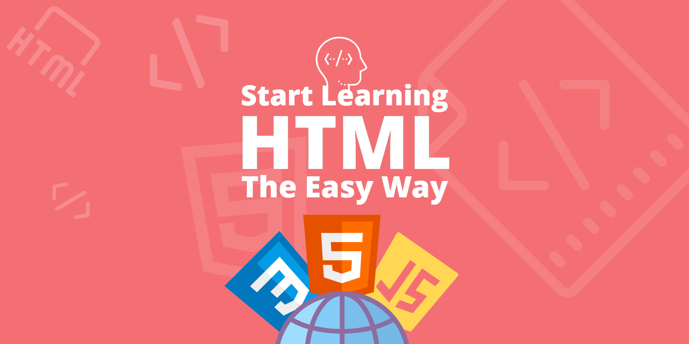

HTML Basics
ستتعلم هنا أساسيات HyperText Markup Language (HTML) وكيفية استخدامها والتعامل معها لإنشاء صفحات الويب.
متطلبات الكورس
- جهاز كمبيوتر
- تنزيل بيئة تطوير Visual Studio Code
- تنزيل متصفح على الكمبيوتر
معلومات الكورس
- المستوى
- مبتدئ
- المدة
- أسبوع
